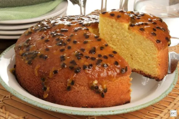

Ingredientes
Massa
- 3 ovos
- 1 xícara de açúcar
- 1/2 xícara de óleo
- 1 xícara de suco de maracujá (natural ou concentrado)
- 2 xícaras de farinha de trigo
- 1 colher (sopa) de fermento em pó
Cobertura (Opcional)
- 1 lata de leite condensado
- 1/2 xícara de suco de maracujá
- Polpa com sementes
Modo de Preparo
Massa
- Em um liquidificador, bata os ovos, o açúcar, o óleo e o suco de maracujá até ficar homogêneo.
- Despeje a mistura em uma tigela e adicione a farinha de trigo aos poucos, mexendo bem.
- Acrescente o fermento e misture delicadamente.
- Coloque em uma forma untada e enfarinhada.
- Leve ao forno preaquecido a 180°C por cerca de 35–40 minutos (faça o teste do palito).
Cobertura
- Misture o leite condensado com o suco de maracujá até engrossar (vira um creme tipo mousse).
- Espalhe sobre o bolo já frio.
- Se quiser, coloque a polpa por cima pra dar um visual bonito e um azedinho extra.
Veja como o seu bolo deve estar após o preparo:
